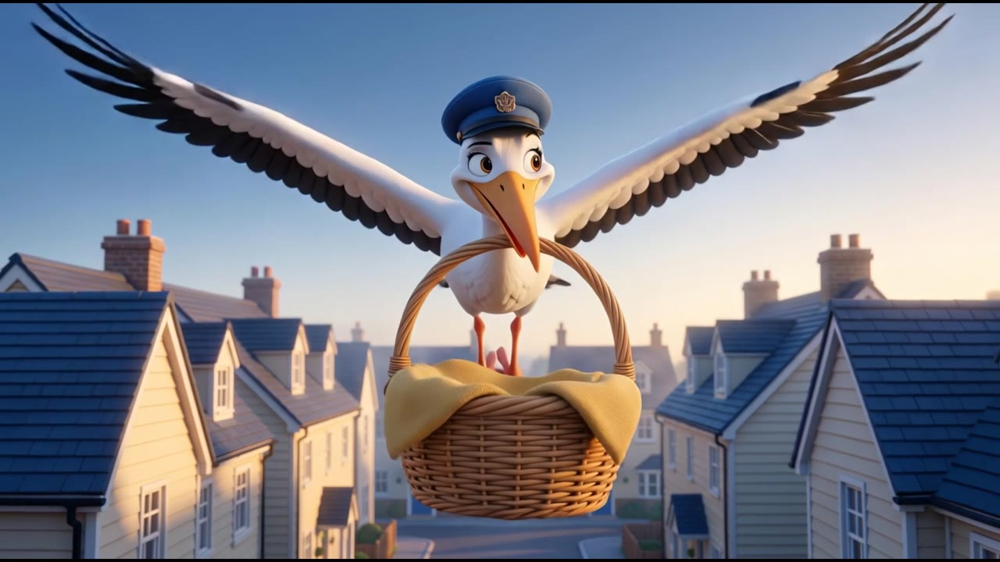
1:09 Film 01Nellie Arrives
One morning, a stork leaves a basket at a blue front door. Inside is Nellie. She dreams of a warm place, and finds one next to Annie. New is not the same as scary.
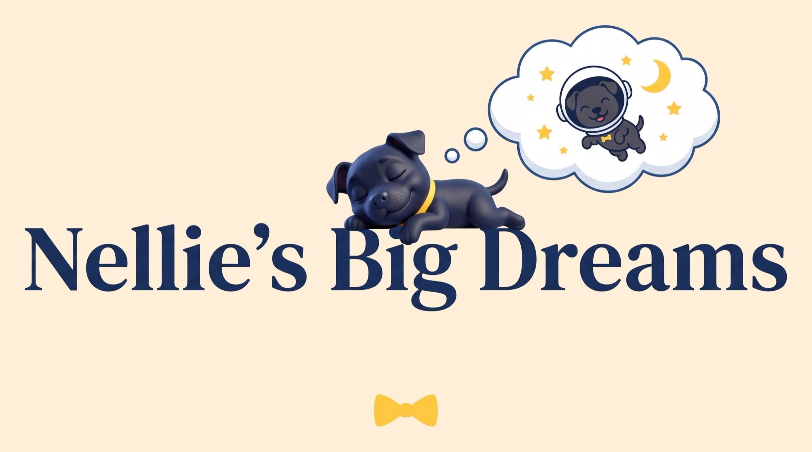
A cartoon for dogs. And the people who love them.
Nellie is a puppy with big dreams. Each film starts with one in a thought cloud: a warm place, a bed of her own, the garden. It comes true, smaller and better than she planned. A narrator tells the story, the dogs say simple words and count, and now and then the picture goes into Dog View.
Watch the FilmsEach film is one big dream with a little lesson at the end, and each is about a minute long. Start with film 01, the day Nellie arrives. Put the screen low, turn the sound on, and see if your dog watches too.

1:09 Film 01One morning, a stork leaves a basket at a blue front door. Inside is Nellie. She dreams of a warm place, and finds one next to Annie. New is not the same as scary.
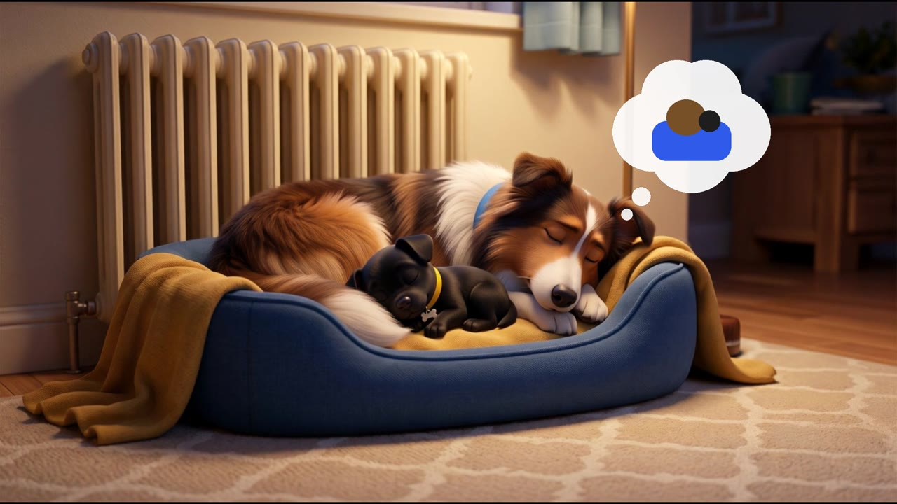
0:51 Film 02Nellie wants a bed of her own. She tries a shoe, the stairs, the laundry and the sofa. The best bed has Annie in it. Safe is a who, not a where.
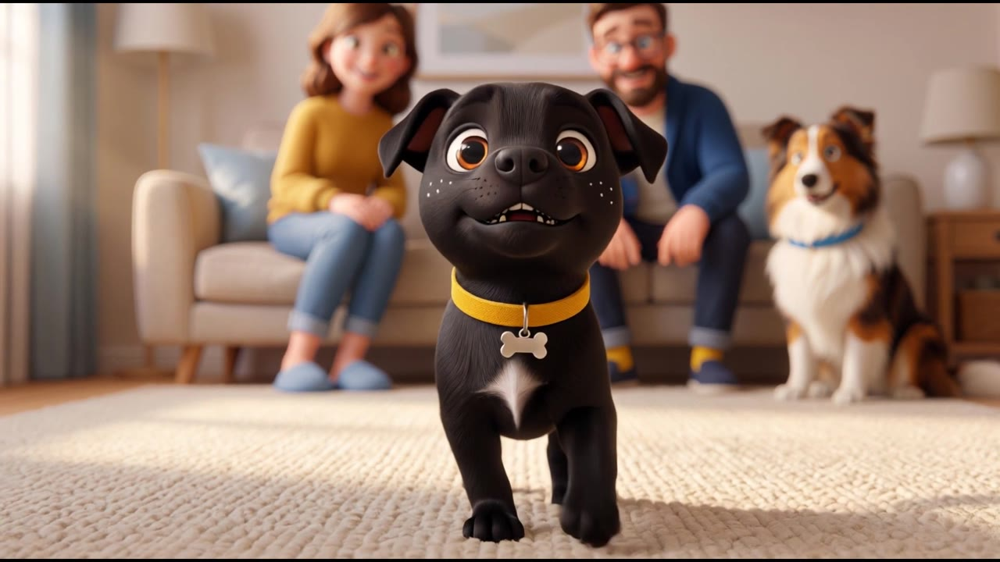
0:41 Film 03A yellow collar goes on, and Nellie wants it off. Then Annie shows her own tag, and Nellie hears hers jingle. The collar means you belong.
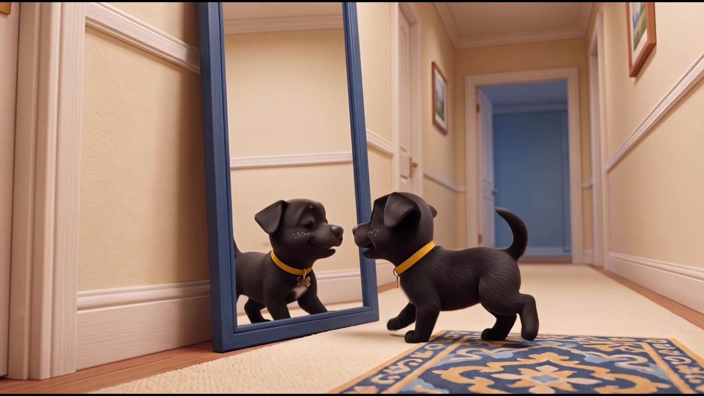
0:59 Film 04Nellie dreams of a friend her own size. The puppy in the hall mirror copies everything she does. Boop. Annie sits down beside her and says, "That one is you."
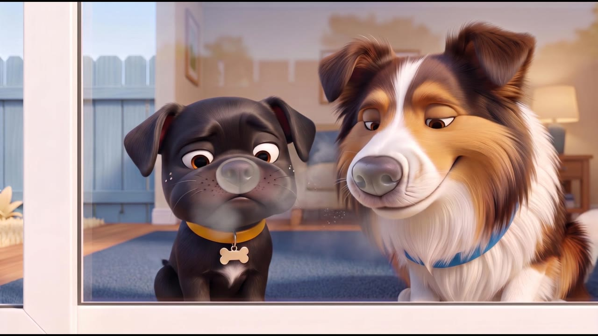
0:52 Film 05The garden is right there, with a yellow ball in it. So is the glass door. Donk. Annie shows her the wall, and the door slides open. Look before you run.
Three little arcade games starring Nellie and her family. Each one plays two ways: the classic pixel game, or 3D with the whole cast. Press MODE on the game, or V on a keyboard, to switch.
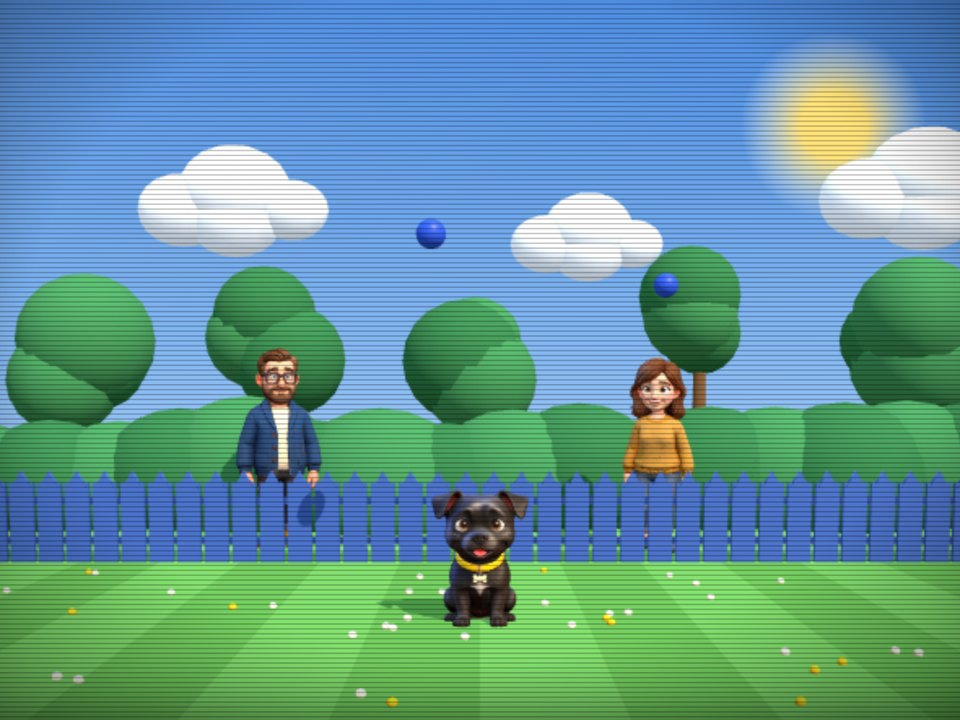
Classic + 3D Game 1Dad and Mum throw from behind the blue fence. Catch the balls and the bones, and dodge the bath bubbles.
Play Nellie's Big Catch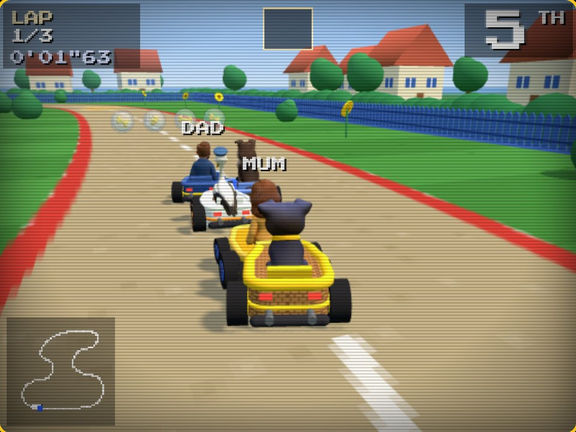
Classic + 3D Game 2Kart races through three dreams: the garden, Cloud Nine and the moon. Fall off a cloud and the Stork flies you back.
Play Nellie's Dream Derby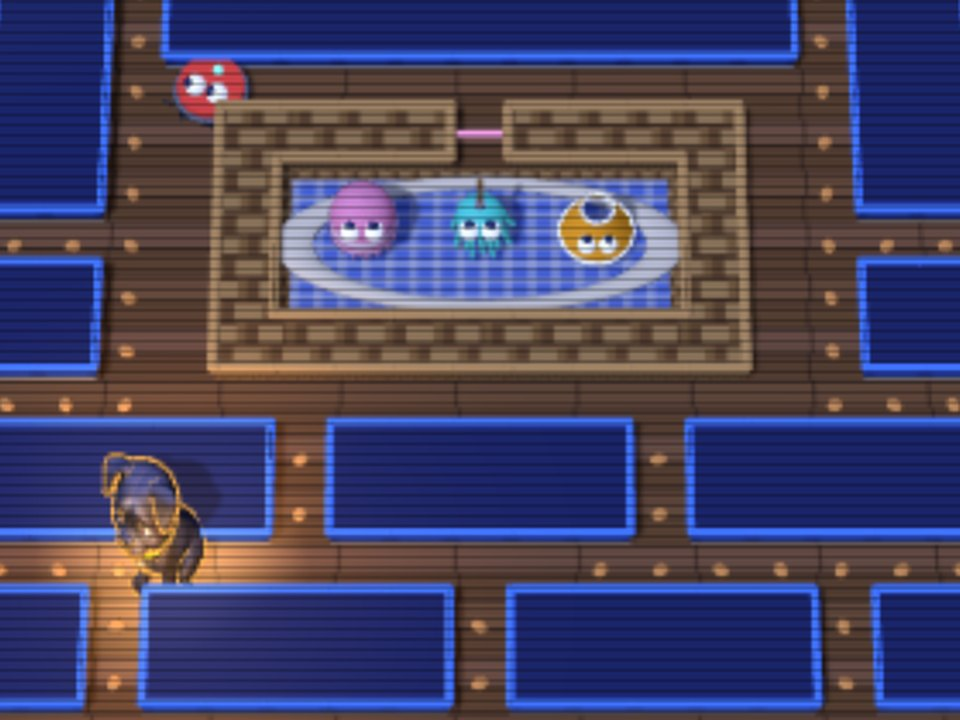
Classic + 3D Game 3Eat every piece of kibble in the dark house before the vacuum, the towel, the mop and the cone catch you.
Play Nellie's Midnight KibbleArrow keys on a computer, the big buttons on a phone. Catch the golden tag and the game switches to Dog View.
Now and then, Nellie's tag goes ting. A ring of yellow light spreads from her collar and the Dog View badge shows. A dog's eye has two kinds of color cones. Ours has three. So her view is blues, yellows and grays. Dog View is for you, the people watching. A simulation of a dog's eye, color only.
Dog View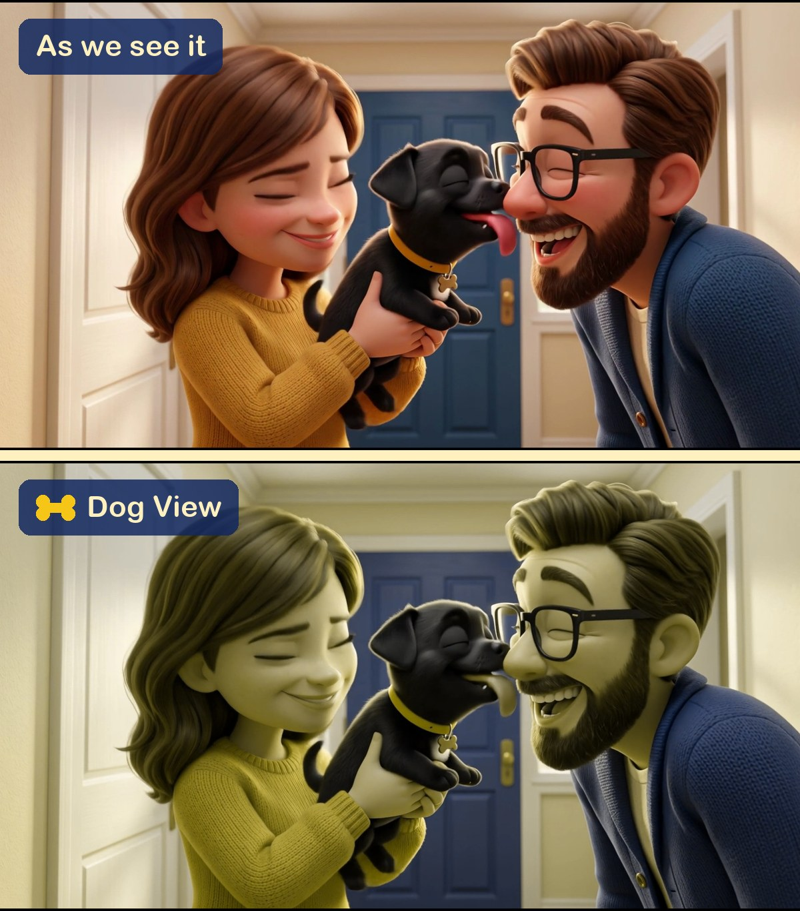
Picture Nellie, our little black puppy, racing across the park after a ball. She is in the same park as you, but she sees it differently. Her colors are different, her picture is softer, her view is wider, and she probably copes better than you do as the sun goes down.
Here is what scientists have learned about dog eyes, and what they are still working out. Small raised numbers point to the sources at the end.
The photos in this guide are illustrations made for Nellie's Big Dreams. Each Dog View version runs the photo through the same color model as the films, explained near the end.
Many of us grew up hearing that dogs see the world in black and white. Veterinary eye specialists call this a common misconception 1. Early studies did lead some researchers to decide that color was unimportant to dogs 2, but later experiments told a different story.
The back of the eye is lined with light-sensing cells. Cone cells handle color, and most people have three kinds 1.
Dogs have two, which is called dichromatic vision. A classic study of three dogs found that the two dog cones respond best at about 429 nanometers, in the blue-violet range, and about 555 nanometers, in the yellow-green range 3. A later study measuring the eye's electrical responses found nearly the same peaks 4.
According to the American College of Veterinary Ophthalmologists, dogs see blues and yellows best, can tell reds from blues, and have trouble telling reds from greens, much like a person with red-green color blindness 1. One veterinary ophthalmologist explains that light we see as green, yellow and red, roughly 500 to 620 nanometers, would all look yellowish to a dog 5.
Researchers even gave dogs a color blindness test: a running cat on a screen, made from the red and green dot colors of a standard test plate. The dogs reacted much like red-green color-blind people do 6.
Color still matters to dogs. Given targets that differed in both color and brightness, eight dogs all preferred to choose by color 2.
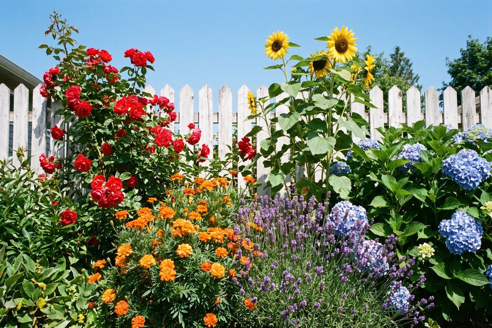
As we see it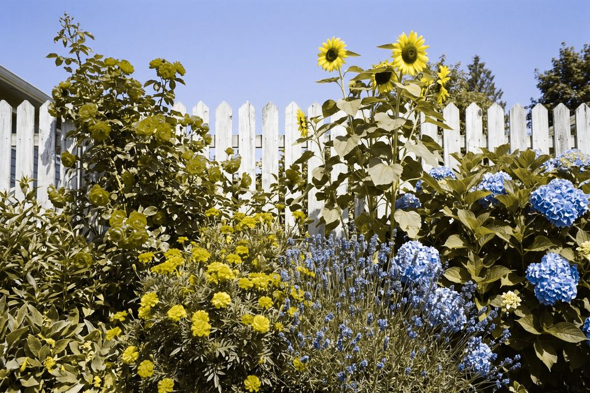
Dog ViewThat solves a familiar puzzle. To a dog, a red ball and green grass fall into the same yellowish family, so the ball does not pop out the way it does for you 1,5. A blue or yellow ball on the same grass gives a dog a much clearer color difference 1.
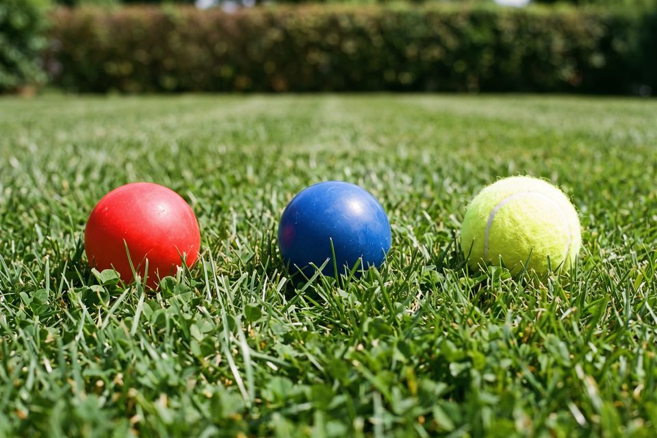
As we see it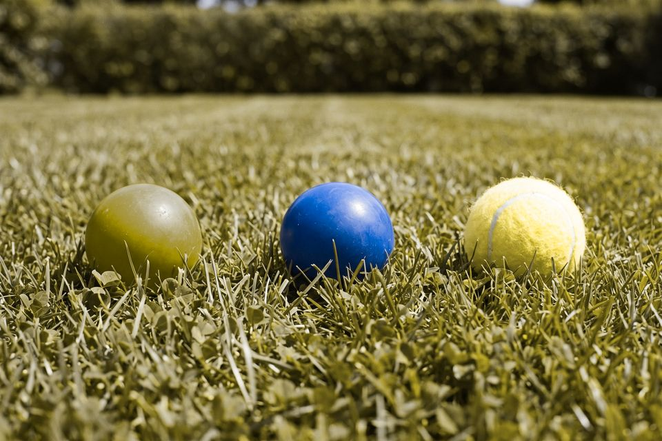
Dog ViewDogs do not see fine detail as sharply as people do. Eye doctors describe sharpness with fractions like 20/20. Studies suggest dogs are around 20/75: a dog has to be 20 feet from something to make out the detail a person with typical vision can see from 75 feet 1.
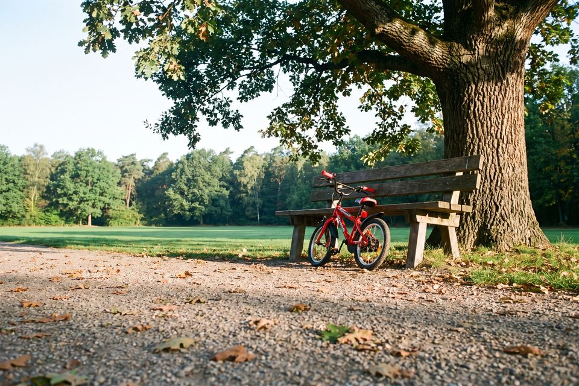
As we see itThat is an estimate, and studies disagree. In a 2017 test with striped patterns, dogs scored 5.5 to 19.5 cycles per degree in bright light (a measure of the finest stripes they could see), while people in the same setup scored 32.1 to 44.2. In other words, people can make things out from roughly three times as far away 7. Earlier tests had put dogs between about 2.5 and 12.6, and one pug in 2017 reached 19.5 7.
Why is the picture softer? Dogs have far more rods (the cells for dim light) than cones. In beagle retinas, even the sharpest spot had about 23 rods for every cone, and the lower edge had about 41 8. Many light-sensing cells share each nerve cell that carries the signal to the brain, which helps in dim light but costs sharpness 5. A dog's optic nerve carries about 165,000 nerve fibers, compared with about 1.2 million in a person 5.
Dogs do have a sharpest spot: in 2014, scientists found a small area packed with cones as tightly as the human fovea, our own sharpest spot, though without its little pit 9.
Two veterinary vision researchers concluded that dogs probably outdo people at functioning in dim light 10. In dogs, the central part of the retina is mostly rods, while the same region in people is mostly cones 1.
Most dogs also have a mirror-like layer in the upper half of the back of the eye, the tapetum lucidum 1. Light that passes through the retina bounces off it for a second chance to be caught 1,11. That is the eye shine you see when a flashlight or car headlight catches a dog's eyes at night, and its color can range from blue-green to gold 5.
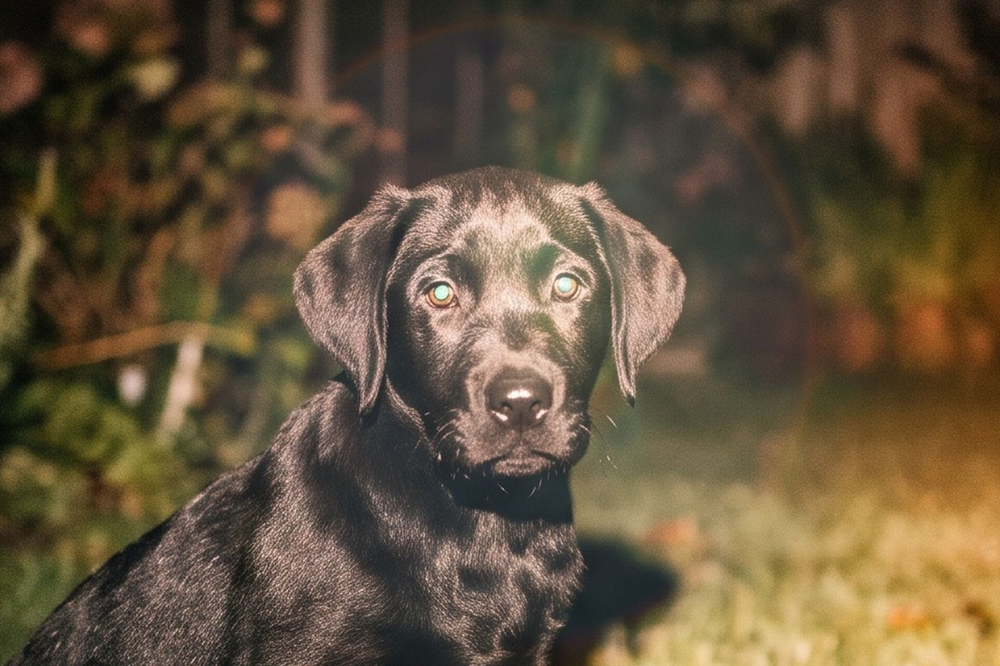
There is a trade-off. The tapetum's scattered light may reduce sharpness 5. And noticing things in dim light is not the same as seeing detail. In very dim light, the 2017 study found dogs scored 1.8 to 3.5 cycles per degree, while people scored 5.9 to 9.9 7. At dusk your dog may spot a shape moving in the shadows, but you may still see the details better.
Dogs are more sensitive to moving objects than to still ones 1. Many dogs ignore a toy lying still, then dash after it the moment it moves 5. A wide view and a rod-rich retina make dogs well suited to spotting movement in dim light 5.
The lab adds a twist. Shown screens of moving dots, dogs needed about 42 percent of the dots moving together before they noticed, while people needed about 5 percent 12. In a test of six dogs, they noticed motion at about 0.76 degrees per second on average, while adults can detect motion slower than 0.1 degrees per second 13. The researchers say this questions the common claim that dogs are especially good at detecting motion 12, though dogs did beat other non-primate animals tested, such as cats 13. Dogs may react to movement quickly without detecting it better than we do.
Films and TV are a fast series of still pictures. Above a certain speed, called the flicker fusion rate, the flashes blend into smooth motion. For dogs in bright light, estimates run from about 70 to 90 flashes per second 5,15,16, compared with about 50 to 60 for people in classic measurements 5,15, although human figures vary from about 50 to 90 depending on the test 17. In low light, dogs and people are similar 5. Several of the dog figures trace back to one study of just four beagles 14,15,16. The honest summary: dogs probably need a faster picture than we do.
At home, researchers suggest that screens with lower refresh rates may look flickery or less real to dogs; televisions most commonly refresh 60 to 120 times a second 16. In the same survey, one owner said their dog became more interested after the family upgraded to a newer TV 16. That is one story, not proof.
Plenty of dogs do watch. In a survey of 1,246 dog owners, 86 percent of those who answered said their dog watched screens. Owners often described excitement: 78 percent said their dog approached the screen, and 76 percent said it made sounds at it. Animal videos were the favorites, and the most popular animal was another dog 16. A 2025 survey of 453 owners found that a dog's personality, such as how excitable it is, helped predict how it reacts to TV, and the authors suggest dogs may treat things on a flat screen much like the real thing 18.
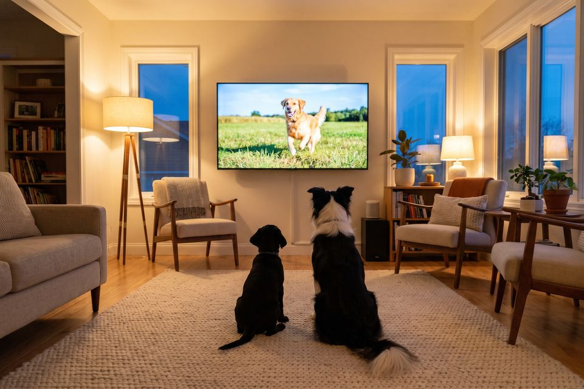
As we see it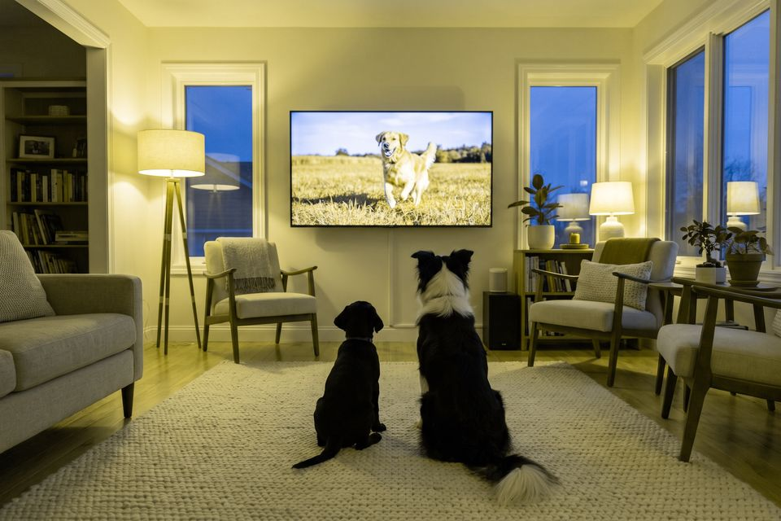
Dog ViewMost dogs' eyes sit further toward the sides of the head than ours, which gives them a wider view 1. A typical dog's field of view is estimated at about 240 degrees, compared with about 200 for people 5. The cost is depth. Depth perception works best where the two eyes overlap, and that overlap is estimated at 30 to 60 degrees in dogs, compared with about 140 in people 1,5. The nose also gets in the way, so depth perception is probably best when a dog looks straight ahead 1.
Skull shape matters. Flat-faced breeds such as pugs have more overlap between the eyes, and long-nosed dogs less 5. Even the inside of the eye changes. A study of 22 dogs found that long-nosed dogs tend to have a horizontal band of sharper vision across the retina, like a wolf's, while a flat-faced pug can have a single concentrated spot instead 19. If Annie, our cartoon collie, were a real dog, her long nose suggests she would have that wolf-like band.
You can switch focus from a far-off tree to the book in your hands. Dogs have much less of this focusing power 5,20. One veterinary ophthalmologist estimates it at about 2 to 4 diopters 5. As a rough calculation from that number, not a measurement, a dog may struggle to focus on things closer than about 25 to 50 centimeters, or roughly 10 to 20 inches. At a distance, most dogs are neither nearsighted nor farsighted 1,5.
So when Nellie meets a new toy, she does not stare at it from an inch away. She sniffs it. Dogs lean on smell and hearing to help them picture the world around them 5.
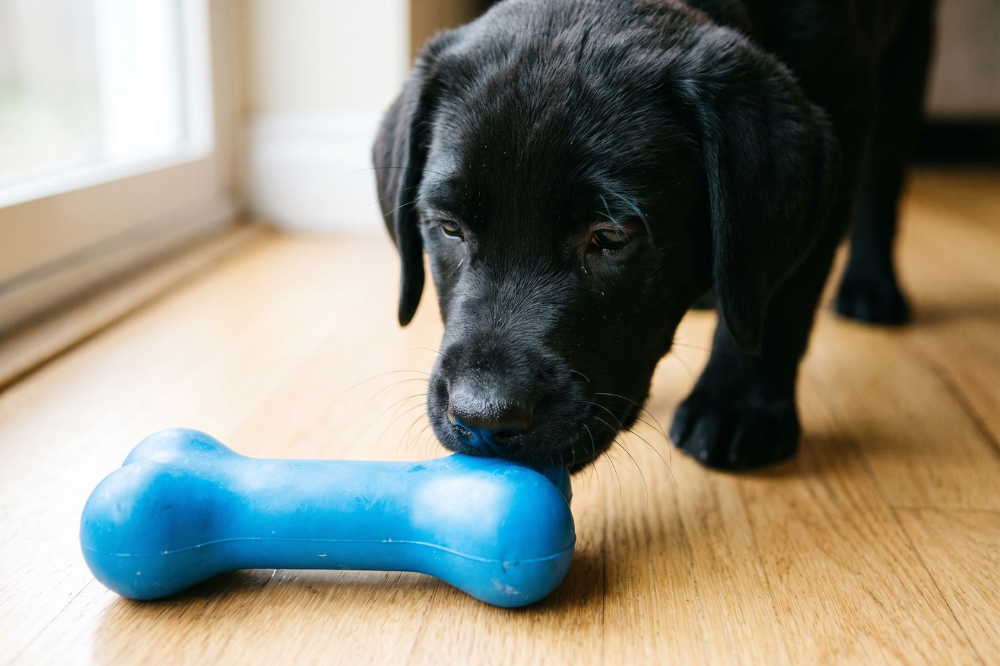
Dog View is the switch in Nellie's Big Dreams that turns the picture into the colors a dog sees, using published color science rather than guesswork.
Researchers have long compared dog color vision with deuteranopia, one form of human red-green color blindness 6. Dog View uses a model built to simulate exactly that, published in 2009 by Gustavo Machado, Manuel Oliveira and Leandro Fernandes. It follows human color vision in two stages, first the cones and then the channels that compare their signals, and was tested with color-blind and normally sighted volunteers. The authors published ready-made settings, where strength 1.0 means full dichromacy 22. Dog View uses the deuteranopia setting at full strength, which mixes each pixel's red, green and blue like this:
| New value | from Red | from Green | from Blue |
|---|---|---|---|
| Red | 0.367322 | 0.860646 | -0.227968 |
| Green | 0.280085 | 0.672501 | 0.047413 |
| Blue | -0.011820 | 0.042940 | 0.968881 |
One more detail: screen colors are stored in an encoded form, not as plain amounts of light, but the model is built from the actual light a screen's red, green and blue give off 22. So Dog View converts each pixel to real amounts of light (called linear light), applies the mix, then converts back.
Dog View changes color only, on purpose. It adds no blur, flicker, wider view or extra dim-light sensitivity. The show is made for children and dogs to enjoy together, so the pictures stay sharp. A film blurred to 20/75 would be hard for kids to follow, and no flat screen can show a 240-degree view anyway. Color is also the part with a tested model behind it. Keep in mind that Dog View is an approximation: a model of human color blindness standing in for a dog's eye.
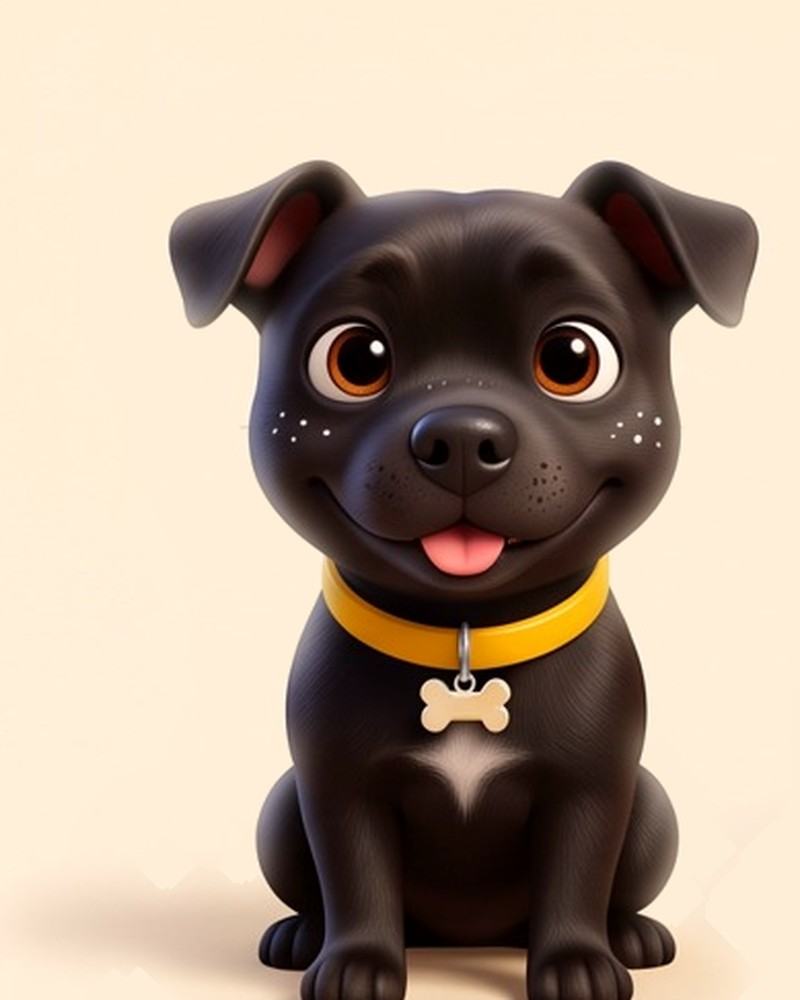
The puppy, and this is her show. Small and black, with freckles, a yellow collar and a bone tag that jingles when she walks. You will often hear her say "Mine." When her tag rings, the picture goes into Dog View.
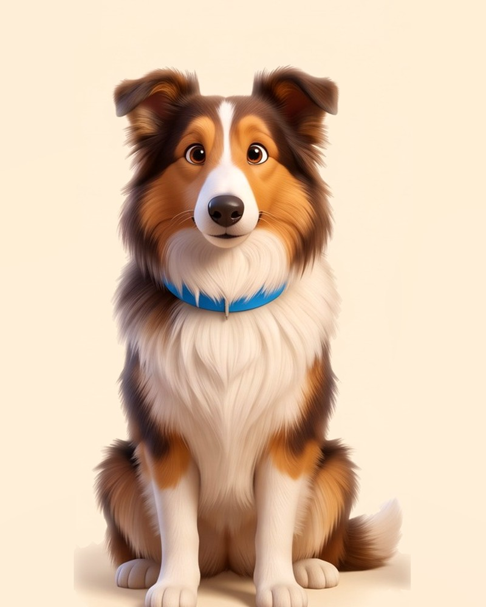
The big collie of the house, with a blue collar and one ear that never stands up. She makes room in her bed and shows Nellie how things work. In films 04 and 05, listen for her "Oh, Nellie!"
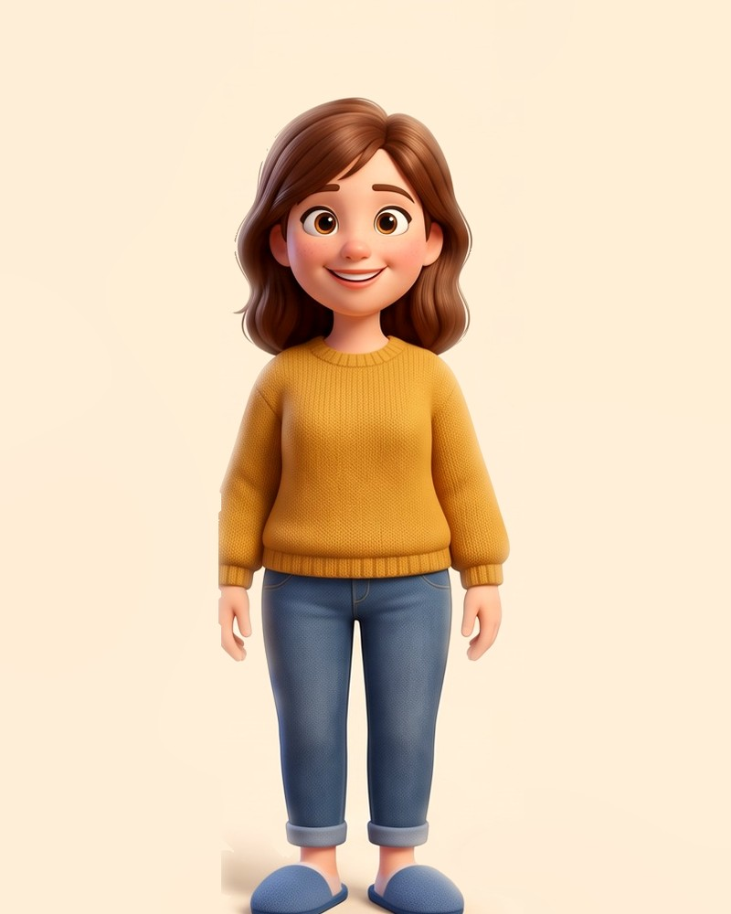
Mustard sweater and blue slippers. Mum is the first to say "Hello, Nellie," and the one who puts on Nellie's yellow collar.
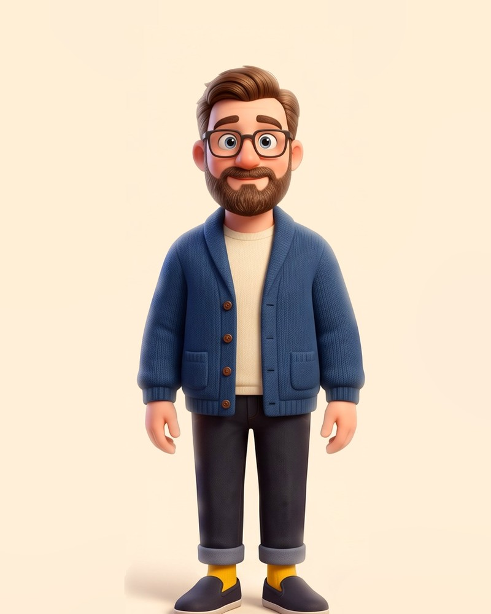
A beard, glasses, a blue cardigan and yellow socks. On her first day, Nellie licks his beard and says, "Beard!" Dad says it back.
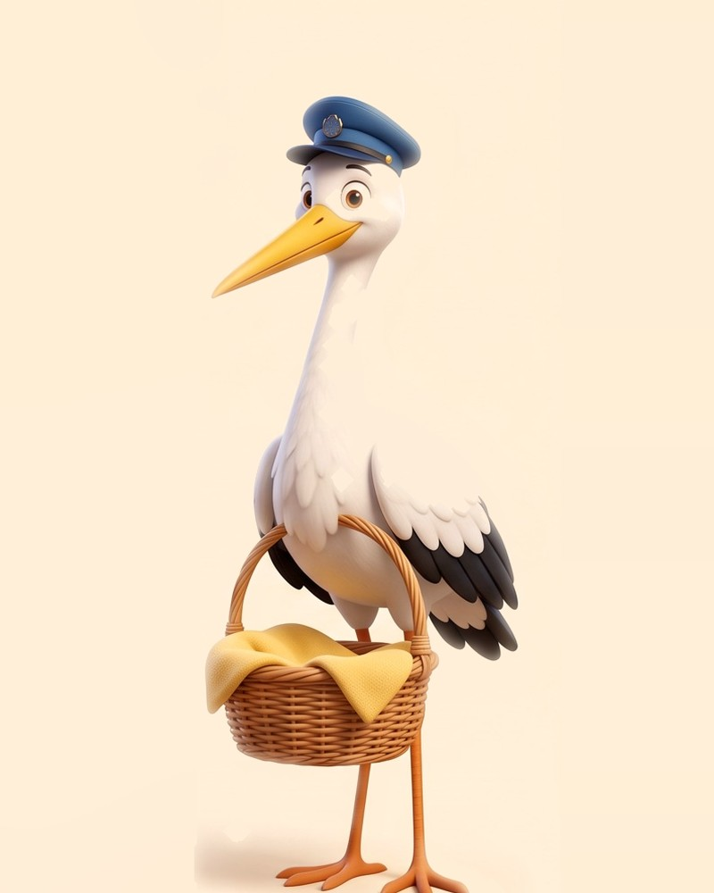
The Stork wears a blue mail carrier's cap. One morning it left a basket on the mat at the blue front door. Inside was Nellie.
Short films, simple words, everyday sounds and one small lesson each. No doorbells or sirens. The stories come from real puppy moments: a first collar, a glass door, a puppy in the mirror. We cannot promise your dog will watch. Some dogs do and some do not. Animated with the help of AI tools.
Follow Nellie
Find Nellie as @nelliesbigdreams on YouTube, Instagram, Facebook and TikTok. Did your dog watch? Film it and show us with #NelliesBigDreams.
Kids, please ask a grown-up before you post.